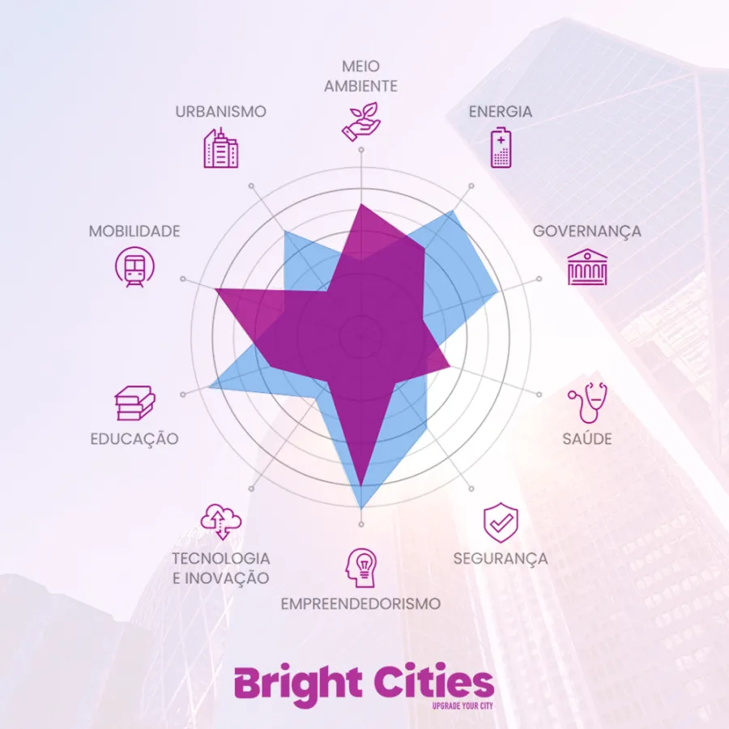
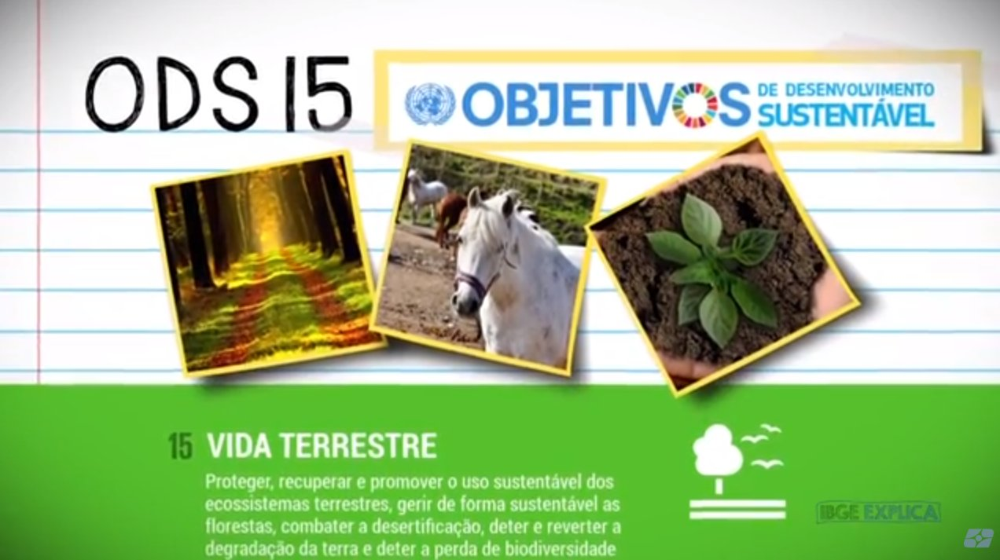

A vida humana depende tanto da terra quanto do oceano para a nossa subsistência sustentável. Os serviços fornecidos pelos ecossistemas terrestres oferecem muitos benefícios para a sociedade, incluindo espaços de recreação, recursos naturais, ar de boa qualidade e água potável.
Com a missão de “proteger, recuperar e promover o uso sustentável dos ecossistemas terrestres“, o objetivo apoia e orienta medidas na direção de uma gestão sustentável das florestas, no fim da degradação do habitat natural, no combate à desertificação e no fim da perda da biodiversidade. Todos esses esforços combinados querem garantir que os benefícios dos ecossistemas baseados na terra, incluindo meios de subsistência sustentáveis, sejam aproveitados pelas nossas gerações futuras.

Falar em meio ambiente é também falar de saúde, especialmente o controle de zoonoses (doenças que são transmissíveis entre animais e humanos). À medida que continuamos a invadir ecossistemas frágeis, colocamos os humanos em contato cada vez maior com a vida selvagem e aumentamos o risco de surgimento e contaminação de doenças, o que vai contra o ODS 3 – Saúde e Bem-Estar.
Para que o diagnóstico completo de uma cidade seja realizado, a Bright Cities coleta e avalia dados obtidos com 160 indicadores internacionais, 21 deles exclusivamente voltados para a área do meio ambiente e também alinhados com o ODS 15 – Vida Terrestre.
Listamos abaixo alguns deles e contamos porque eles são uma importante ferramenta que as cidades possam cumprir as metas estabelecidas por esse importante plano de ação global.
- Indicador “Áreas verdes”:
- Indicador “Número de árvores plantadas por ano”:
- Indicador “Porcentagem de resíduos sólidos da cidade reciclados”:
Os Principais Objetivos da ODS-15 até 2030
Assegurar a conservação, recuperação e uso sustentável dos ecossistemas terrestres e dos ecossistemas interiores de água doce, em especial florestas, zonas úmidas, montanhas e terras áridas.

Preencher Novamente Login